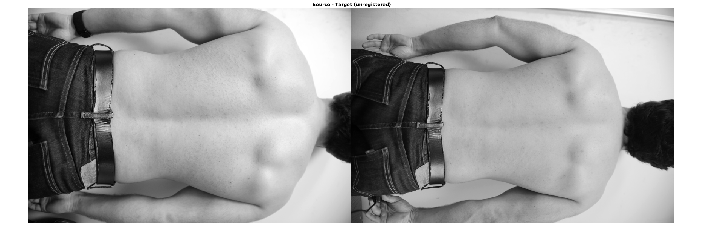
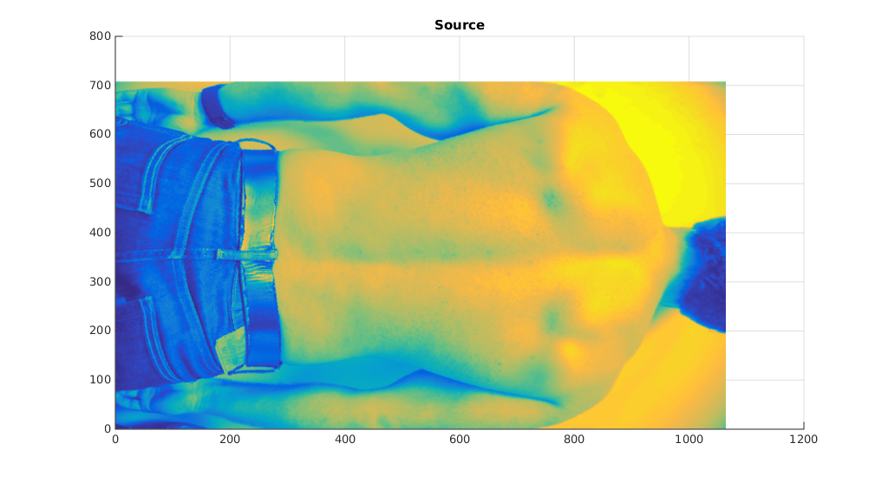
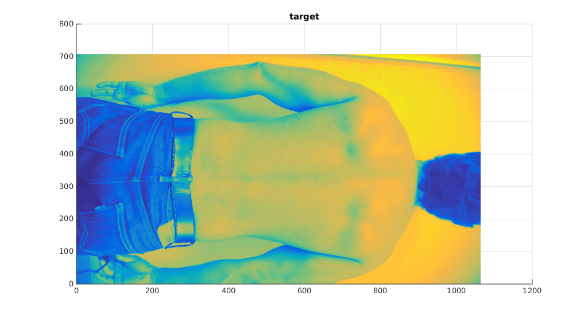
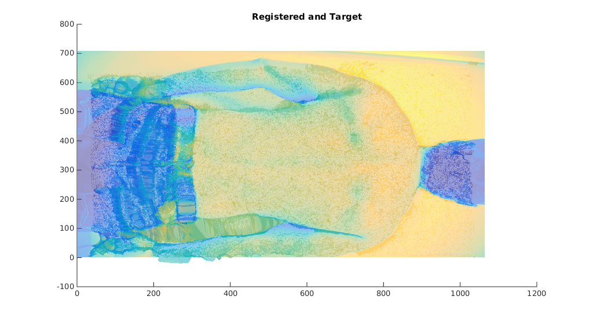
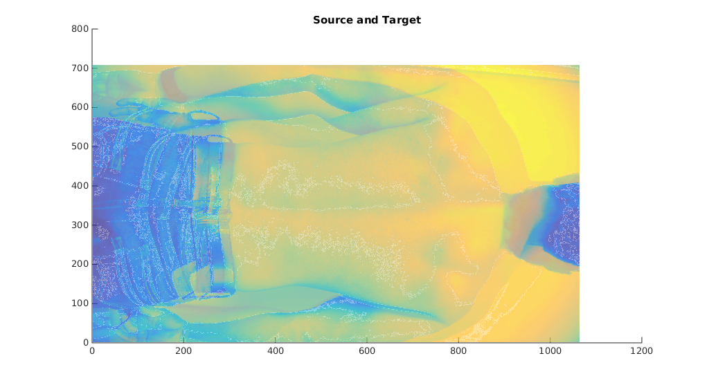
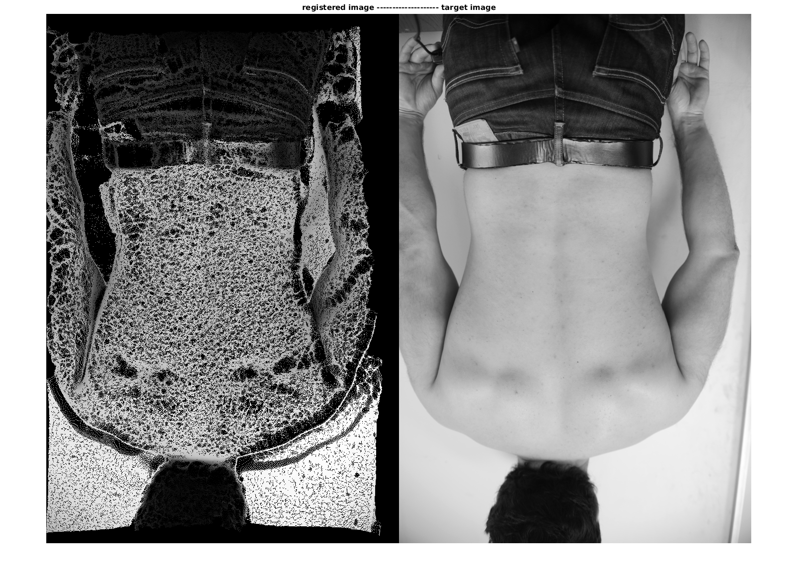
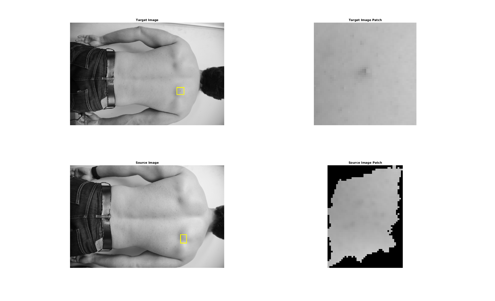
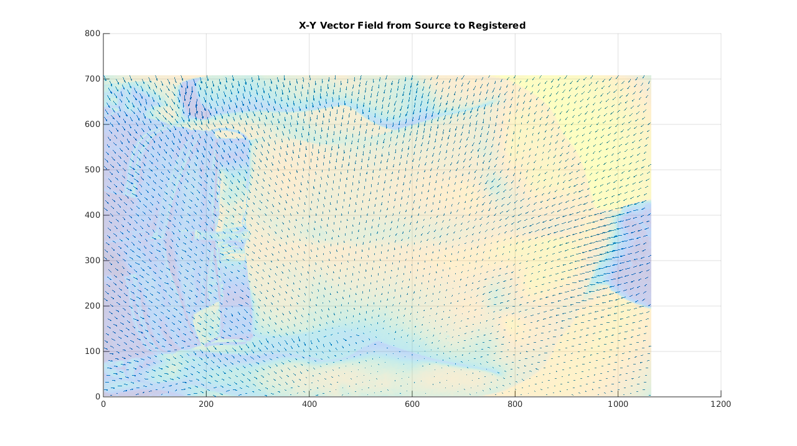
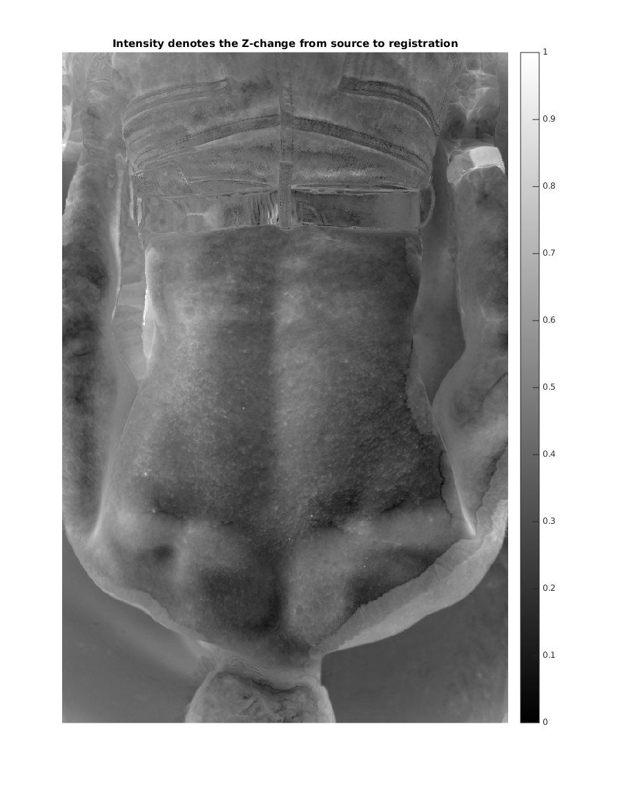

Non-Rigid ICP With Local Deformations on NikonD3 Skin-Mark System
Contents
- Discussion & Experimental Setup
- Load Registration Results - Data_2
- Display the images
- Display point clouds of the source and target
- Display the same point clouds overlaid
- Convert registered point cloud back to an image & display it
- Given an image patch in the target image, extract the corresponding patch in the source image
- Plot 2D vector field difference between source and registered results
- Heatmap of 3D displacement
Discussion & Experimental Setup
Experimental Setup
In this experiment we apply non-rigid ICP (nICP) to the problem of aligning images of a person's back. Images are taken in the same pose and the same lighting, but there are obvious differences between them due to the deformability of individuals.
To account for these differences, we apply nICP. Of two images being considered, one is called the 'target', and the other is called the 'source', and nICP attempts to register the source onto the target using the following procedure: rigid ICP -> non-rigid deformation -> local surface optimization
this is a procedure designed to work with 3D point clouds of sensor data (consider, for example, the cartilage data examples that come with the code). So as a preprocessing step we convert the images into point clouds of (x,y,z) coordinates as (x_pixel, y_pixel, grayscale_intensity). The procedure then registers the point clouds together, and we can use this registration to map correspondences between pixels in the target and pixels in the source.
Discussion
What we find is that it does not work. While the point-cloud registration does quite well (as can be seen below), when we try to match a ROI in the target image to its corresponding patch in the source image, the results are highly inaccurate.
We diagnose this bizarre contradiction by considering the vector field displacement of the source and registered point clouds, as well as the pixel intensity difference between the source and registered point clouds. What we see is that the vector fields are not as heavily displaced as expected. Much of the back region is non-displaced, but the head region is. Additionally what we see are notable differences in the Z-axis intensity of the source and registered point clouds. This is contrary to what we want. We want shifting in the x-y axes but minimal motion in Z.
We conclude that this registration did not work due to too much shifting in Z and not enough x-y motion.
Possible Solution
We may be able to account for the z motion by serious scaling of the z values to force the algorithms to displace more in x-y.
Load Registration Results - Data_2
% Load the registration results of a set of images load('Results_all/data_2.mat');
Display the images
figure('units','normalized','outerposition',[0 0 0.5 0.5]); imshowpair(im_source, im_target, 'montage'); title(' Source - Target (unregistered)');
Display point clouds of the source and target
d = 0.4; figure('units','normalized','outerposition',[0 0 d d]); trisurf(sourceF, sourceV(:,1), sourceV(:,2), sourceV(:,3),'Edgecolor','none'); title('Source'); view(0,90) figure('units','normalized','outerposition',[0 0 d d]); trisurf(targetF, targetV(:,1), targetV(:,2), targetV(:,3),'Edgecolor','none'); title('target'); view(0,90) 
Display the same point clouds overlaid
figure('units','normalized','outerposition',[0 0 d d]); hold on; trisurf(sourceF, registeredV(:,1), registeredV(:,2), registeredV(:,3),'Edgecolor','none', 'FaceAlpha', 0.5); trisurf(targetF, targetV(:,1), targetV(:,2), targetV(:,3), 'Edgecolor','none', 'FaceAlpha', 0.5); title('Registered and Target'); view(0,90) figure('units','normalized','outerposition',[0 0 d d]); hold on; trisurf(sourceF, sourceV(:,1), sourceV(:,2), sourceV(:,3), 'Edgecolor','none', 'FaceAlpha', 0.5); trisurf(targetF, targetV(:,1), targetV(:,2), targetV(:,3), 'Edgecolor','none', 'FaceAlpha',0.5); title('Source and Target'); view(0,90) 
Convert registered point cloud back to an image & display it
% Round values to make them integers reg = round(registeredV); % Clip (x,y) values of registered image to be within the target's xmax = size(im_target,2); ymax = size(im_target,1); reg(reg(:,1) > xmax,:) = []; reg(reg(:,2) > ymax,:) = []; xmin = 1; ymin = 1; reg(reg(:,1) < xmin, :) = []; reg(reg(:,2) < ymin, :) = []; % Insert (1,1) and (xmax,ymax) to registered point cloud to 'tether' it to those points for sparse matrix casting reg(end+1,:) = [1 1 0]; reg(end+1,:) = [xmax ymax 0]; % Average together the points that have the same (x,y) coordinates. These are the results of cloud points being clustered very closely together reg_count = reg; reg_count(:,3) = 1; F = full(sparse(reg(:,1), reg(:,2), reg(:,3))); F_count = full(sparse(reg_count(:,1), reg_count(:,2), reg_count(:,3))); F_count(F_count == 0) = 1; imreg = F ./ F_count; imtar = full(sparse(targetV(:,1), targetV(:,2), targetV(:,3))); % Display registered image on top of target image figure; imshowpair(imreg, imtar, 'montage'); title('registered image -------------------- target image') % imshowpair(imreg, imtar);
Given an image patch in the target image, extract the corresponding patch in the source image
% Pick image patch in target x = 763; y = 473; w = 25; % Right Shoulder Blade % Extract Target Patch xvals = x - w : x + w; yvals = y - w : y + w; patch = im_target(yvals, xvals); % Display Target Image and Target Patch h_patches = figure('Name', 'Target Image and Patch', 'units','normalized','outerposition',[0 0 1 1]); subplot(2,2,1); imshow( insertShape(im_target, 'Rectangle', [min(xvals) min(yvals) range(xvals) range(yvals)], 'LineWidth', 5) ); title('Target Image') subplot(2,2,2); imshow(patch); title('Target Image Patch') % Find corresponding patch in source image - I don't think this is correct.... ind = 1:size(registeredV,1); ind(registeredV(:,1) < min(xvals)) = inf; ind(registeredV(:,1) > max(xvals)) = inf; ind(registeredV(:,2) < min(yvals)) = inf; ind(registeredV(:,2) > max(yvals)) = inf; ind(ind == inf) = []; ps = sourceV(ind,:); % Extract Source Patch Exactly mask = uint8(zeros(size(im_source))); for i = 1:length(ps) p = ps(i,1:2); mask(p(2), p(1)) = 1; end yrange = min(ps(:,2)):max(ps(:,2)); xrange = min(ps(:,1)):max(ps(:,1)); mask = mask .* im_source; patch_source = mask(yrange, xrange); % Plot Source Patch subplot(2,2,3); imshow( insertShape(im_source, 'Rectangle', [min(xrange) min(yrange) range(xrange) range(yrange)], 'LineWidth', 5) ); title('Source Image') subplot(2,2,4); imshow(patch_source); title('Source Image Patch')
Plot 2D vector field difference between source and registered results
x = sourceV(:,1); y = sourceV(:,2); u = registeredV(:,1) - sourceV(:,1); v = registeredV(:,2) - sourceV(:,2); subs = 200; x = x(1:subs:end); y = y(1:subs:end); u = u(1:subs:end); v = v(1:subs:end); figure('units','normalized','outerposition',[0 0 0.5 0.5]); trisurf(sourceF, sourceV(:,1), sourceV(:,2), sourceV(:,3), 'Edgecolor','none', 'FaceAlpha', 0.25); hold on; quiver(x,y,u,v); title('X-Y Vector Field from Source to Registered'); view(0,90)
Heatmap of 3D displacement
zdiff = registeredV(:,3) - sourceV(:,3);
m = full(sparse(sourceV(:,1), sourceV(:,2), zdiff));
figure; imshow( mat2gray(m) );
title('Intensity denotes the Z-change from source to registration')
colorbar;
